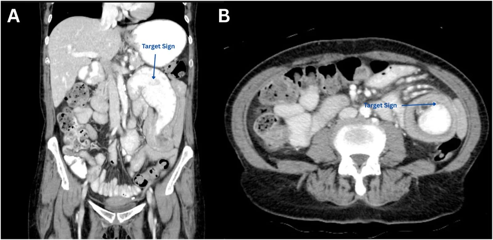
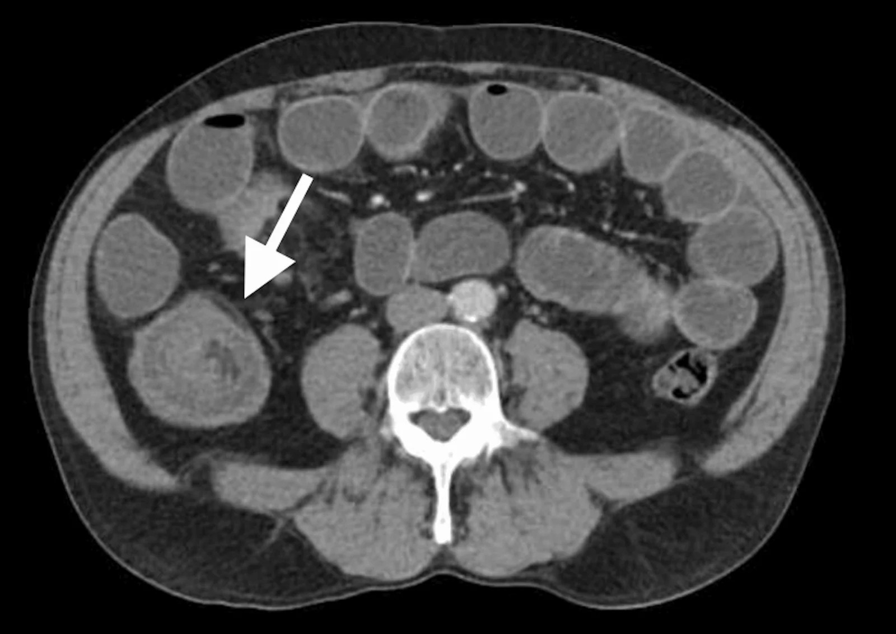
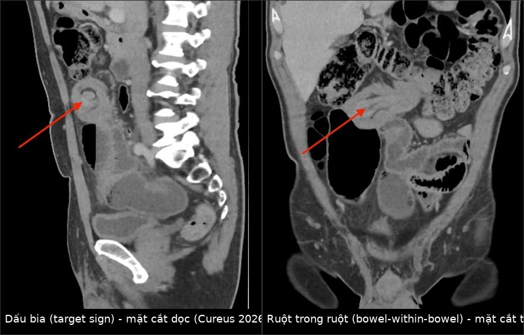
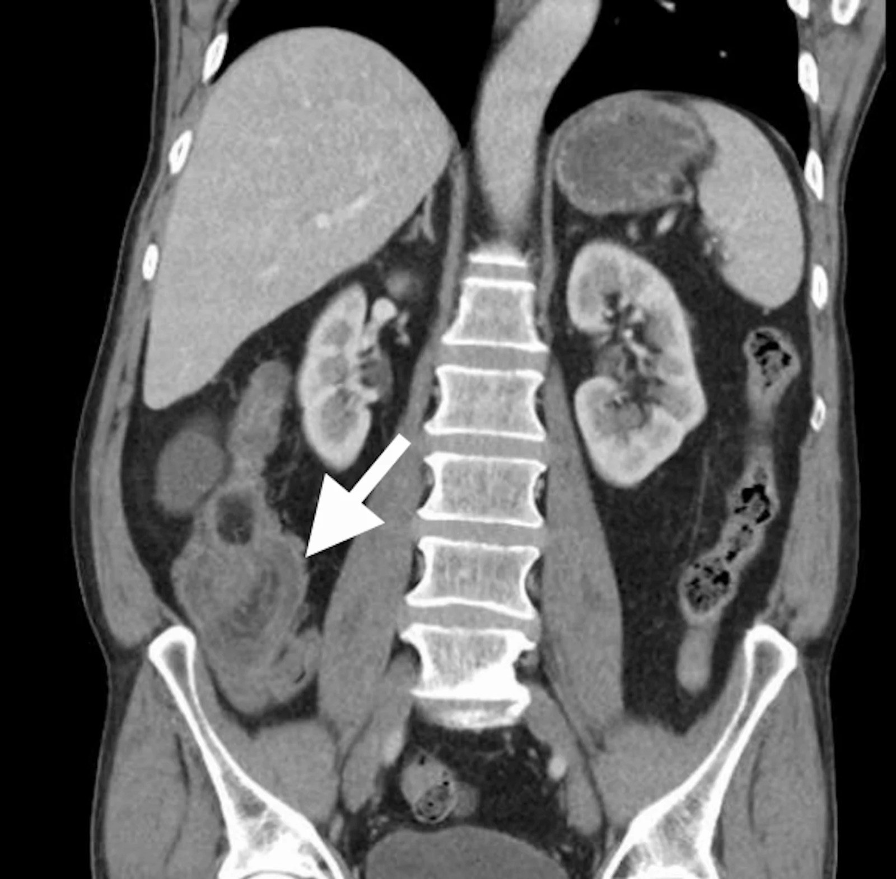

3128 — Lồng ruột non–non ở người lớn: dấu bia, ruột trong ruột và câu hỏi "có điểm dẫn lưu trú không?"
Tags: pattern:long-ruot pattern:ruot-trong-ruot pattern:dau-bia pattern:tac-ruot vung:ruot-non vung:dai-trang vung:o-bung anatomy:ruot-non anatomy:dai-trang protocol:CT-bung-co-can-quang
Mức chắc chắn (certainty): tổng hợp y văn (literature synthesis) — ghép một tổng quan về vai trò MDCT trong lồng ruột người lớn (BioMed Research International 2016, PMC4706914, CC BY 4.0), một mô hình chẩn đoán phân biệt lồng ruột cần mổ và không cần mổ trên MDCT (Acta Informatica Medica 2021, PMC8116087, CC BY-NC 4.0), một loạt 54 ca lồng ruột người lớn (JGH Open 2025, PMC11840692, CC BY 4.0) và một loạt 26 ca (Medical Science Monitor Basic Research 2024, PMC11629587, CC BY-NC-ND 4.0). Không có ca do nhóm tự chụp.
Câu hỏi thực hành: nam 58 tuổi, đau bụng từng cơn 2 tuần, sụt 3 kg, không nôn. CT bụng có cản quang: một khối hình bia 4,8 cm ở hố chậu phải, có lớp mỡ mạc treo lẫn vào, đoạn ruột phía trên giãn 3,4 cm. Câu hỏi: đây là lồng ruột thoáng qua hay phải mổ — và mổ theo cách nào? Bài chốt ba quyết định: (1) ở người lớn, "ruột trong ruột" không phải bệnh lành tính của trẻ — 70–90% có điểm dẫn lưu trú, đại tràng có nguy cơ ác tính cao nhất; (2) chiều dài < 3,5 cm, không tắc, không điểm dẫn = nhóm theo dõi được, còn ≥ 5,0 cm / đường kính ≥ 3,2 cm / mỡ chen ≥ 0,5 cm là nhóm mổ; (3) khi nghi ác tính thì cắt đoạn nguyên khối, KHÔNG tháo lồng — tháo lồng làm tăng nguy cơ thủng và gieo tế bào.
1. Tổng quan bệnh học – cơ chế hình ảnh: vì sao người lớn khác trẻ em
- Tần suất và vì sao phải nhớ: lồng ruột người lớn chiếm 5% toàn bộ lồng ruột, 1–3% các ca tắc ruột, và 0,003–0,02% ca nhập viện; trên hình ảnh, chỉ 0,15% (96/61.203) ca chụp MDCT bụng–chậu trong 6 năm, tương đương các loạt khác 0,04–0,05% (PMC8116087, PMC11629587).
- Khác biệt cốt lõi so với trẻ: ở trẻ 90% lồng ruột vô căn và điều trị bằng thụt/nong bóng; ở người lớn 70–90% có điểm dẫn lưu trú (lead point) thực thể, nên thụt tháo không có chỗ đứng và phần lớn cần mổ.
- TẠI SAO có lồng ruột: một đoạn ruột (intussusceptum) lồng vào lòng đoạn kế cận (intussuscipiens) do rối loạn nhu động khi có khối u, polyp, túi thừa, dính hoặc sẹo — khối làm thay đổi nhu động khu trú và "kéo" đoạn ruột theo. Vị trí hay gặp là nơi chuyển tiếp giữa đoạn ruột di động và đoạn cố định sau phúc mạc.
- TẠI SAO CT thấy được (vật lý đậm độ): lồng ruột tạo ra 4 lớp đậm độ xen kẽ: thành ruột ngấm thuốc 60–90 HU, mỡ mạc treo bị kéo vào −50 đến −100 HU, dịch trong lòng 0–20 HU, và khí −1.000 HU. Chính lớp mỡ mạc treo đậm độ thấp nằm giữa hai vòng thành ruột là thứ tạo nên "dấu bia" (target sign) khi chùm tia vuông góc trục lồng ruột, và "dấu xúc xích" (sausage sign) khi chùm tia song song/xiên. Trên mặt cắt dọc, hai vòng thành lồng nhau cho "ruột trong ruột" (bowel-within-bowel).
- Ngưỡng định lượng quyết định thái độ (đo trên MDCT):
- chiều dài lồng < 3,5 cm: hiếm khi cần mổ, thường tự hết (PMC4706914);
- mô hình phân biệt mổ/không mổ của loạt 96 ca: chiều dài ≥ 5,0 cm, đường kính ≥ 3,2 cm, lớp mỡ chen giữa ≥ 0,5 cm → nhóm cần mổ (PMC8116087);
- có điểm dẫn lưu trú + tắc ruột + dấu thiếu máu → mổ cấp cứu bất kể kích thước.
- Vì sao đại tràng nguy hiểm hơn ruột non: thống kê kinh điển 65–70% lồng ruột đại tràng do ác tính, trong khi ruột non chỉ 30–35% (PMC4706914). Loạt MDCT 2021 xác nhận: 100% lồng ruột đại tràng có điểm dẫn lưu trú, 70,3% trong số đó ác tính và 84% là ung thư biểu mô tuyến nguyên phát; lồng ruột non–non chỉ 57,1% có điểm dẫn lưu trú, 30% ác tính (PMC8116087).
- Bối cảnh lâm sàng (loạt 54 ca Nhật): tuổi trung vị 71 (57–78); đại tràng 53,7%, hồi–manh tràng 18,5%, ruột non 27,8%; 48,1% (26/54) do ác tính, trong đó 25 ca ung thư đại tràng trực tràng và 1 ca ung thư ruột non; 14,8% không triệu chứng; đau bụng 57,4%; khởi phát cấp ≤ 4 ngày 44,4%, mạn > 14 ngày 27,8%. Triệu chứng mạn và vị trí đại tràng là yếu tố độc lập dự báo ác tính (PMC11840692).
- Loạt 26 ca Jordan: tuổi trung bình 53,3; đại tràng–đại tràng 53,8%, ruột non 19,2%; 92,3% chẩn đoán trước mổ bằng CT; 57,7% điểm dẫn lưu trú lành tính (lipoma và polyp mỗi loại 33,3% trong nhóm lành); 90,9% điểm dẫn lưu trú ác tính nằm ở đại tràng; chảy máu trực tràng 54,5% ở nhóm ác tính so với 6,7% ở nhóm lành (p = 0,011) (PMC11629587).
- Tỷ lệ ác tính dao động lớn giữa các loạt: 20–57% (27%, 38%, 20%, 34%, 57%, 39%) — vì vậy không được suy từ "tỷ lệ chung" sang từng bệnh nhân, phải đọc đặc điểm khối và bối cảnh.
2. Mẫu hình + chẩn đoán phân biệt theo vị trí và cơ chế (gamut)
- Mẫu hình cốt lõi: đau bụng từng cơn ± nôn ± bí trung đại tiện, CT có khối hình bia/xúc xích với lớp mỡ mạc treo lẫn vào, ± giãn ruột phía trên.
- Gamut theo loại (quyết định thái độ):
- Ruột non – ruột non (enteroenteric), có điểm dẫn lưu trú: lipoma (đậm độ mỡ), polyp tuyến, u mô bào xơ viêm (inflammatory fibroid polyp, IFP/Vanek), túi thừa Meckel, dính sau mổ; ác tính 30% (di căn hắc tố, GIST, lymphoma, ung thư biểu mô).
- Ruột non – ruột non, KHÔNG điểm dẫn lưu trú: thường ngắn, không tắc, có thể thoáng qua; đây là nhóm theo dõi được nếu < 3,5 cm và không triệu chứng nặng.
- Hồi–manh tràng (ileocecal) / hồi–đại tràng: hay gặp ở người trẻ hơn; điểm dẫn lưu trú có thể van hồi manh tràng dày, lipoma, túi thừa Meckel, u lympho.
- Đại tràng – đại tràng (colocolonic): ung thư biểu mô tuyến chiếm ưu thế; cũng gặp lipoma lớn, polyp, phân cứng (fecaloma). Coi mọi lồng ruột đại tràng là có điểm dẫn lưu trú.
- Ngược dòng sau mổ (retrograde): sau Roux-en-Y hoặc cắt dạ dày — lồng ruột hỗng tràng vào dạ dày (jejunogastric), cấp cứu, dễ bỏ sót vì khối nằm trong dạ dày.
- Do can thiệp: sau nội soi đại tràng, sau đặt ống thông ruột, sau mổ nội soi — có thể thoáng qua nhưng vẫn có thể có điểm dẫn lưu trú (ca 65 tuổi trong PMC13561165 có lipoma thật).
- Lồng ruột non–non do tắc nghẽn phía dưới: ung thư đại tràng gây tăng nhu động → lồng ruột non thứ phát; phải tìm tổn thương phía dưới, nếu không sẽ mổ mà bỏ sót u nguyên phát.
- Phân loại hình thái CT (Merine) — dùng để mô tả, không phải để chẩn đoán mô học: dạng bia (target) = sớm, ít tắc; dạng thận (reniform) = thành ruột phù/thiếu máu; dạng xúc xích (sausage) = lát cắt song song trục.
3. Bảng so sánh phân biệt (ma trận đối chiếu)
| Thực thể (entity) | Hình ảnh điển hình | Chốt vào (rule-in) | Chốt loại (rule-out) | Gợi ý xác nhận |
|---|---|---|---|---|
| Lồng ruột có điểm dẫn lưu trú ÁC TÍNH | Khối đặc trong lòng, bờ không đều, ngấm thuốc, thường đại tràng, kèm tắc và hạch | Khối đặc + chiều dài ≥ 5,0 cm + tắc + tuổi ≥ 64 + triệu chứng mạn | Tổn thương đậm độ mỡ thuần hoặc ngắn < 3,5 cm không tắc → không nghĩ ác | CT 3 thì bụng–chậu; nội soi đại tràng sau ổn định; mổ cắt đoạn |
| Lồng ruột do LIPOMA | Khối đậm độ mỡ −50 đến −100 HU, bờ rõ, đẩy lệch, thường ruột non hoặc đại tràng phải | Đậm độ mỡ thuần + không ngấm thuốc | Đậm độ mỡ lẫn mô mềm > 20% → nghĩ u mỡ ác (liposarcoma) | Đo HU trên CT không cản quang; mổ cắt đoạn |
| Lồng ruột do IFP (Vanek) | Polyp ngấm thuốc đều, thường hồi tràng, gây lồng ruột non–non lặp lại | Polyp nhỏ ngấm thuốc + tái phát nhiều đợt | Khối lớn, bờ xâm lấn, hạch → ác tính | Mổ cắt đoạn; mô bệnh học |
| Lồng ruột THOÁNG QUA / không điểm dẫn lưu trú | Ngắn < 3,5 cm, đường kính nhỏ, không tắc, không thấy khối, thường tình cờ | Ngắn + không tắc + không khối + không triệu chứng | Tắc, dài ≥ 5,0 cm, có khối, hoặc thiếu máu → không theo dõi | Chụp lại CT có cản quang sau 1–2 ngày; theo dõi lâm sàng |
| Lồng ruột NGƯỢC DÒNG sau mổ | Khối trong dạ dày hoặc quai Roux-en-Y, thành dày, ± tắc | Tiền sử cắt dạ dày/Roux-en-Y + nôn ra dịch mật + khối trong dạ dày | Không có tiền sử mổ, khối ở vị trí điển hình → loại | CT có cản quang uống; nội soi; mổ |
| Lồng ruột SAU NỘI SOI | Lồng ruột tại đoạn vừa soi, thường hồi–đại tràng, có thể tự hết | Trong 24 giờ sau nội soi + không tắc + không khối | Có khối đặc/điểm dẫn lưu trú → xử trí như lồng ruột thực thể | CT lặp sau 12–24 giờ; theo dõi sát |
| Lồng ruột non–non DO TẮC PHÍA DƯỚI | Lồng ruột ngắn ở ruột non + đại tràng giãn hoặc khối đại tràng | Tổn thương tắc nghẽn phía dưới + lồng ruột thứ phát | Không có giãn phía trên, không khối xa → loại | CT toàn ổ bụng; nội soi đại tràng |
| Bắt chước: khối phân/thức ăn trong lòng ruột | "Bia giả" do phân lẫn khí, không có lớp mỡ mạc treo, không đổi giữa các lát | Không có mỡ mạc treo chen giữa + thay đổi theo lát cắt | Có lớp mỡ mạc treo + mạch nuôi đi vào khối → lồng ruột thật | Đọc lại MPR coronal/sagittal; CT lặp |

Trái (A): mặt cắt trước — lồng ruột hỗng–hỗng tràng với khối mô mềm trong lòng làm điểm dẫn lưu trú (mũi tên). Phải (B): mặt cắt ngang — dấu bia (mũi tên). Nguồn: Radiology Case Reports 2026 (PMC13652428), CC BY 4.0.Ba dấu hiệu phải tìm trên mọi ca "ruột trong ruột"
- Điểm dẫn lưu trú: khối đặc/đậm độ mỡ ở đầu mút lồng ruột; nếu không thấy trên lát ngang, dựng MPR coronal/sagittal dọc trục lồng.
- Mức độ tắc: đo đường kính ruột non > 3 cm và đại tràng > 6 cm, mức dịch–khí, quai chuyển tiếp.
- Dấu thiếu máu: thành ruột dày > 3 mm, giảm/không ngấm thuốc, mạch mạc treo căng, khí trong thành, dịch tự do — đây là chỉ định mổ ngay, không chờ.
4. Protocol chụp + thuật toán xử trí
Protocol MDCT (chuẩn chẩn đoán):
- CT bụng–chậu có cản quang tĩnh mạch, thì tĩnh mạch cửa 70–80 giây, lát ≤ 1–2 mm, luôn dựng coronal + sagittal; độ chính xác được báo cáo 58–100% và trong loạt 26 ca đạt 92,3% chẩn đoán trước mổ.
- Không cần cản quang uống (có thể che khối); nếu cần đánh giá tắc ruột non thì cản quang uống tan trong nước có ích nhưng không bắt buộc.
- Không dùng barium khi có tắc hoàn toàn hoặc nghi thủng.
- Đo và ghi vào báo cáo: vị trí, loại (non–non, hồi–manh, đại tràng–đại tràng, ngược dòng), chiều dài, đường kính, độ dày lớp mỡ mạc treo chen giữa, có/không điểm dẫn lưu trú, có/không tắc, có/không thiếu máu, có khối thứ hai.
- CT có vai trò kép: chẩn đoán và giai đoạn hóa nếu nghi ung thư (gan, phúc mạc, hạch) — quyết định mổ nội soi hay mổ mở.
flowchart TD
A[CT thấy lồng ruột ở người lớn] --> B{Có tắc thiếu máu hoặc thủng}
B -->|Có| C[Mổ cấp cứu cắt đoạn nguyên khối]
B -->|Không| D{Vị trí đại tràng hay ruột non}
D -->|Đại tràng| E[Coi là có điểm dẫn lưu trú và mổ cắt đoạn]
D -->|Ruột non| F{Chiều dài dưới 3,5 cm và không điểm dẫn}
F -->|Có| G[Theo dõi và chụp lại sau 1 đến 2 ngày]
F -->|Không| H[Mổ tháo lồng thận trọng hoặc cắt đoạn]
G --> I{Tái phát hoặc có triệu chứng}
I -->|Có| H
I -->|Không| J[Theo dõi ngoại trú]
Nguyên tắc mổ (theo bằng chứng trong bài):
- Nghi ác tính → cắt đoạn nguyên khối, KHÔNG tháo lồng: tháo lồng làm tăng nguy cơ thủng và gieo tế bào ung thư; đây là lý do chính khiến CT phải trả lời "có khối đặc không".
- Lành tính hoặc vô căn → có thể tháo lồng trước rồi cắt đoạn để tránh hội chứng ruột ngắn, đặc biệt ở ruột non.
- Đại tràng: luôn cắt đoạn; không nong/thụt như trẻ.
- Nội soi hỗ trợ: chỉ khi tổn thương nhỏ, không tắc, không nghi ác tính và có bác sĩ mổ có kinh nghiệm; không dùng nội soi để "gỡ" lồng ruột đại tràng.
5. Biến thể bình thường và cạm bẫy
- Lồng ruột thoáng qua là có thật: nhiều ca không triệu chứng, ngắn < 3,5 cm, tự hết; mổ ngay là mổ oan. Ngược lại, "thoáng qua" trên một lần chụp không cho phép bỏ qua khối đặc — phải chụp lại có cản quang và đọc MPR.
- Bẫy vị trí sau nội soi: ca 65 tuổi trong PMC13561165 được CT gọi là hồi–đại tràng, nhưng mổ xác nhận hồi–hồi tràng đã chui qua van hồi manh tràng, với lipoma dưới niêm mạc làm điểm dẫn lưu trú. Đừng chỉ mô tả "lồng ruột hồi–đại tràng" rồi dừng — phải tìm điểm dẫn lưu trú và mô tả đường đi thực.
- Bỏ sót tổn thương thứ hai: 3,1% ca có hai lồng ruột trong loạt 96 ca (PMC8116087); đọc hết ổ bụng, không dừng ở tổn thương gây triệu chứng.
- Bỏ sót ung thư đại tràng phía dưới: lồng ruột non–non có thể chỉ là hệ quả của tắc nghẽn xa; nếu không nhìn đại tràng, bệnh nhân được mổ ruột non mà ung thư vẫn còn.
- "Bia giả" do phân/thức ăn: không có lớp mỡ mạc treo và mạch nuôi đi vào khối, hình thay đổi giữa các lát cắt và khi đổi tư thế.
- Thiếu máu không luôn thấy trên CT sớm: thành ruột có thể còn ngấm thuốc trong giai đoạn đầu; đau nhiều, lactate tăng, không cải thiện vẫn là chỉ định mổ.
- Tuổi và triệu chứng mạn là dấu hiệu ác tính: tuổi ≥ 64, triệu chứng > 14 ngày, vị trí đại tràng — bộ ba này làm tăng xác suất ác tính và phải soi đại tràng sau mổ nếu chưa có mô bệnh.

Cùng ca 65 tuổi sau nội soi: dấu bia trên mặt cắt ngang (mũi tên) — hình này dễ bị đọc là "lồng ruột hồi–đại tràng" và bỏ qua khối lipoma ở đầu mút. Nguồn: Cureus 2026 (PMC13561165), CC BY 4.0.6. Tự lượng giá — Blind Quiz
Ca 1 — Nam 58 tuổi, đau bụng từng cơn 2 tuần, sụt 3 kg. Nhìn ảnh, mô tả trước.
- Gợi ý lâm sàng: không nôn, không tiểu máu; bạch cầu 9.800; lactate 1,6 mmol/L.
- Câu hỏi: Dấu hiệu chính là gì? Có điểm dẫn lưu trú không? Mổ theo cách nào?
Bấm để hiện đáp án (findings + chẩn đoán)
- Dấu hiệu: lồng ruột hỗng–hỗng tràng với khối mô mềm trong lòng ở đầu mút (A) và dấu bia trên lát ngang (B); đoạn ruột phía trên giãn nhẹ.
- Chẩn đoán: lồng ruột non–non có điểm dẫn lưu trú — mô bệnh sau mổ là u cơ trơn (leiomyosarcoma).
- Xử trí: cắt đoạn ruột non nguyên khối, không tháo lồng vì nghi ác tính; xác nhận bằng hóa mô miễn dịch (SMA+, desmin+).
- Nguồn ảnh: Radiology Case Reports 2026, PMC13652428, CC BY 4.0.
Ca 2 — Nữ 47 tuổi, đau quanh rốn 3 ngày, thiếu máu thiếu sắt mạn. Hai mặt cắt dưới đây.

- Câu hỏi: Dấu hiệu nào trên mặt cắt dọc, dấu hiệu nào trên mặt cắt trước? Vì sao phải tìm khối?
Bấm để hiện đáp án
- Dấu hiệu: mặt cắt dọc — dấu bia (target sign); mặt cắt trước — ruột trong ruột (bowel-within-bowel), kèm quai ruột non phía trên giãn.
- Chẩn đoán: lồng ruột hồi–hồi tràng do u cơ trơn ruột non, gây thiếu máu thiếu sắt mạn (loét niêm mạc).
- Xử trí: cắt đoạn + nối ruột; mô bệnh xác định u cơ trơn, Ki-67 khoảng 20%.
- Nguồn ảnh: Cureus 2026, PMC13676072, CC BY 4.0 (ảnh ghép letterbox).
Ca 3 — Nam 65 tuổi, 12 giờ sau nội soi đại tràng tầm soát thì đau hố chậu phải dữ dội.

- Câu hỏi: Có nên kết luận "lồng ruột sau nội soi, theo dõi"? Điều gì trên ảnh buộc phải mổ?
Bấm để hiện đáp án
- Dấu hiệu: dấu bia ở hố chậu phải (mũi tên), kèm giãn ruột non phía trên; CT ban đầu gọi là hồi–đại tràng, mổ xác nhận hồi–hồi tràng chui qua van hồi manh tràng.
- Chẩn đoán: lồng ruột do lipoma dưới niêm mạc hồi tràng làm điểm dẫn lưu trú, khởi phát sau nội soi.
- Xử trí: mổ cắt đoạn hồi tràng + lấy hạch mạc treo; bài học: có khối dẫn lưu trú thì không theo dõi đơn thuần, và vị trí trên CT có thể sai so với mổ.
- Nguồn ảnh: Cureus 2026, PMC13561165, CC BY 4.0.
Bài liên quan chéo
- 162 – Tắc ruột non/già, quai kín & thiếu máu mạc treo
- 160 – Bụng cấp tiêu hóa
- 1984 – Bệnh màng ngăn ruột non do NSAID & CMUSE
- 134 – U nhầy ruột thừa chưa vỡ
- 1872 – Thoát vị Littre: túi thừa Meckel trong túi thoát vị
- 622 – Tắc ruột sơ sinh
- 161 – Viêm ruột thừa cấp
Ảnh
- Tên file:
3128_long-ruot-non-non_CT_PMC*.jpg(5 ảnh) +composite_target-bowel-within-bowel.jpg. Nguồn, giấy phép từng ảnh:images/CREDITS.md.
Không dùng để chẩn đoán độc lập khi chưa có người hướng dẫn.